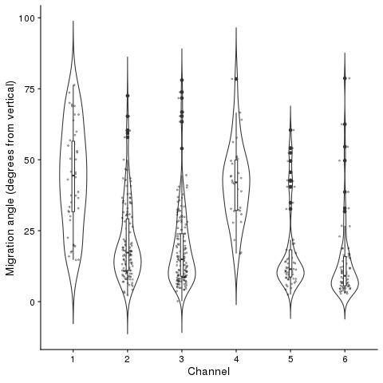
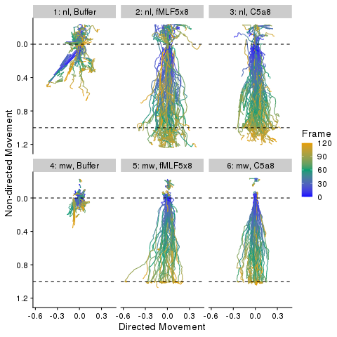

Chemotaxis Dashboard Poster
Dashboard for Exploration of Experimental Chemotaxis Data
Poster presentation given Aug 3, 2022
Rilyn McKallip1, Jane Smoltz1, Yanling Liu1, Linmin Pei2, Douglas Kuhns3, Randall Johnson1
1. Integrated Data Science Section, Research Technologies Branch, National Institute of Allergy and Infectious Disease 2. Advanced Biomedical Computational Science, Frederick National Laboratory for Cancer Research 3. Neutrophil Monitoring Lab and Immunological Monitoring Lab, Applied/Developmental Research Directorate, Frederick National Laboratory for Cancer Research
Abstract
Migration of neutrophils to a nidus of infection is a critical component of the host innate immune response; defects in neutrophil chemotaxis can have a severe impact on immune function. Time lapse videos of neutrophil chemotaxis in response to a chemoattractant can be a valuable tool for diagnosing rare defects, but manual collection of quantitative data from these videos can be tedious and time-consuming. We have developed an AI-based workflow to automatically segment and track the paths of individual migrating cells and provide some measures of cell shape.
The chemotaxis dashboard facilitates exploration of summary statistics for each cell (cell velocity over time and direction of movement) and for each sample (average velocity over time, average direction of movement, and the proportion of cells successfully migrating across the area of observation). Cells from different samples can be clustered, compared and contrasted based on the distribution of these summary statistics (e.g. cells obtained from healthy donors vs patients or cells responding to different chemoattractants).
Find us on GitHub, or shinyapps.io.
Introduction
- Neutrophils are a key part of the innate immune response. A critical function of neutrophils is their ability to quickly migrate to the nidus of an infection and kill pathogens through phagocytosis and/or the release of radical oxygen species or other antimicrobial enzymes (Priel and Kuhns (2019)).
- Defects in neutrophil chemotaxis can cause recurrent skin abscesses that sometimes lead to life-threatening infections.
- Diagnostic imaging of neutrophil chemotaxis can be used to measure cell velocity, distance traveled, and directionality of movement over time, but the process of obtaining these data can be manually intensive and time-consuming. As a result, studies typically either only include qualitative descriptions or statistics from a small portion of imaged cells (Cook et al. (2020)).
- There is a need for automated processing of image data and generation of summary statistics for all imaged neutrophils.
Methods
- Extract position information from Boyden chamber assays using U-net segmentation.

Calculate cell velocity, angle of migration, chemotactic efficiency for each cell over time.
- Velocity is calculated by taking the first derivative of the function of smoothed position over time at each time point.
- Total distance traveled: \(\Delta_{total} = \sum_{j=1}^{n-1} \sqrt{(x_j - x_{j+1})^2 + (y_j - y_{j+1})^2}\)
- Vertical displacement: \(\Delta_y = |y_n - y_0|\)
- Horizontal displacement: \(\Delta_x = |x_n - x_0|\)
- Angle of migration: \(\theta = \tan^{-1}\left(\frac{\Delta_x}{\Delta_y}\right)\)
- Chemotactic efficiency: \(CE = \frac{\Delta_y}{\Delta_{total}}\)
Calculate summary statistics for each sample and each experiment/batch.


- Display these statistics on an interactive dashboard for easy comparison and diagnosis of samples.
Results & Conclusion
The result of our research is this Shiny App, an interactive R-based web application, which will generate figures and summary statistics based on which samples and experiments the user selects to view. This will aid the researchers by computing and displaying and comparing these statistics for each dataset.